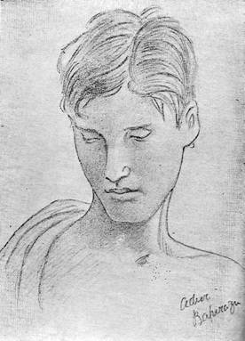

MEMORIES OF ADIVI BAPIRAZU
By
OSWALD COULDREY, M.A, (Oxon.)
(Formerly
Principal,
Adivi Bapirazu joined the
first year class of the College, if I remember rightly, in nineteen thirteen,
when he would have been about sixteen years old, He and I were eminently what
Bhavabhuti calls samana dharma; our
dispositions were remarkably alike, and that in so many ways that I cannot
easily remember which particular predilection it was that first drew us
together. I think it must have been his delight in telling stories of his
boyhood. I always enjoyed what seemed to me the romantic glimpses of old Indian
country life which all too rarely relieved the dullness of my students’ essays.
Bapirazu would from the first have been unusually rewarding in this respect.
But it was his oral communication of such fare that I remember better. A
delightful talker in every way, and a sworn lover of country life and country
lore, he was especially a born story-teller, with a remarkable gift of
reminiscence. He lived with zest and with equal zest remembered. Heaven, he
said to me once, is remembering our pleasant times. This from a sage of less
than twenty years! What a pity that he never lived to write a book of pure
reminiscence such as a poet writes in age. It might well have been his best
book, for I doubt whether the best of him ever got into his books. Many of his
casual memories it is now my own turn to remember. He told me once how nearly
we came to never meeting at all. He had a cousin who resembled him from babyhood,
and once after a family festival the two mothers unwittingly exchanged babies.
The mistake was only recognised because his mother
presently missed her baby’s anklets. More personally revealing was his account
of the habit he developed rather later of stealing from (I think) his
grandfather’s bed to watch the midnight shadow plays or ‘Skin-pictures’, that
delightful old Asian equivalent of the now too, too Western movies. His
grandfather always knew where to look for him. A ‘Skin-picture’ fan myself, I
tried later to persuade him (and to persuade my friend the Editor of Triveni
to persuade him) to write an account of that early love of his, with
coloured drawings by his own hand of those traditionally ornate and glorious
transparencies of leather, those two-dimensional and radiant effigies of the
stately Rama and the terrible Ravana and the nimble Hanuman. What more
endearing epitome and memento could we have desired of the later poet and
painter, with his abiding devotion to his country’s tradition as enshrined in
the poetry and picture and music of the Andhra folk as well as of their social
betters? Alas, it was never to be written,–I feel sure that he meant to write
it. I cannot believe that he ever grew ashamed of his earliest idolatry and its
innocent object, as I suspect that too many of Mr. Ramakotiswara Rau’s readers
were and perhaps still are ashamed of those lovely untouchables. I say perhaps,
for I wonder if any ‘Tolu Bommalu’
fellowships in Andhra still survive the competition of their all-conquering
Western counterpart.
A
good example of Bapirazu’s gift of happy childhood
reminiscence is the account of an old-fashioned Brahmin wedding which I have
incorporated almost word for word (for it arrived opportunely in a letter) in
the marriage chapter of my South Indian Hours (P.223). There are many
other traces of him in my writings, I recorded in the same book his
impromptu comparison of a certain recurring type of September raincloud to a Nagaraja with
expanded hood, and another of Pampas plumes beside Godavary
to clouds seen from a mountain top at dawn; these promising now not the
story-teller but the poet. The story of Balakrishna
in my Phantom Waterfall collection is an artificial amalgam of two true
episodes, the setting a sketch of him in action from life, the rest an
experience of his in his own words which came like the wedding in a later
letter. The sketch illustrates several characteristics of the future poet and
painter; his love of images visible and invisible, of playful myth-making, of
swimming. The first and last at least I shared with him. He gave me the Nandi which he found in the river and I still have it (but
it is of copper not of silver). The stone Venugopala
from Bhuvaneshwar he managed to retain. To finish
with my larcenies, the first verse of the poem “To his Friend beside Godavary” in my Sonnets of East and West is a
literal translation of a Telugu verse of his written on a Christmas card about
1917. This card has also a drawing of an allegorical maiden. Such handmade
Christmas cards I used to get regularly about that time and earlier from the
Damerla brothers and Varada Venkataratnam
also and still have several. But Bapirazu’s alone
bore original verse. The second verse of my poem is my own and was prompted by
an inexplicable cessation of his letters to me in
It
was from these handmade Christmas cards suggested no doubt by those of Ram and Varada, that
I first noticed the promise that was in him to draw as well as write. He had
not Ram’s 1 visual grip, but his delight in pictures and picturing
and general inventiveness led me to think that he might succeed painter in a
less naturalistic manner than that which attracted Ram,
and I suggested that he should learn to draw in the archaistic
manner then favoured in Bengal. When the Bengalis
later sent an educational art mission to the South he remembered my suggestion
and followed it, how happily is known to all. I mention this
the more gladly for an amusing reason. When my book on
Towards
the end of my time in
In
1916 both Bapirazu and Damerla Rama Rao went with me to
After
seeing Ajanta our party separated, the two future
painters returning, well primed with Directions, by way of Ellora
(which I had seen the year before) while I went on to Sanchi.
In
the following April we visited Bhuvaneshwar and spent
several days exploring its many beautiful old temples. This time Ram’s elder
brother and his cousin Kavikondala, the Poet, came
too; altogether quite a little galaxy of talent, One day I came upon them all
swimming together in the lovely little old stone tank of the Mukuteshwara temple. They seemed rather abashed, as if they
were afraid that I should join them; for we had been amusing ourselves by
imagining a plot to smuggle me into the great Rajalingam
temple disguised as a Cashmiri pundit. Another day
when I was laid up with a chill (in high April!) the four of them walked
without me the six miles to Undavilli to see the
famous Jaina caves there. Another day Bapirazu, favoured by heaven as usual, found in a field a small stone
sculpture of his favourite idol Venugopala,
clearly a last priceless fragment of a lost twelfth century temple. This we
carried away and it must be still among the treasures left by him. That same
year or the next he and I cycled up the river from
I
do not remember that Bapirazu ever played tennis or even turned out for hockey,
but he was as fond of swimming as I was, and as much at home in (and under) the
water. We used often to bathe together from Naga-lanka
in the early morning. I like to remember that I taught him the sidestroke which
was then unknown in those parts and which he mastered at once and used with
ease and power. In the dry spring season we and the Damerlas
often went for an evening sail in a hired nawa,
and once at least when the waves rode higher than usual we all dived
overboard in a race with a fisherman who had expressed anxiety about safety of
his boatload of distinguished landlubbers. But the pleasantest to remember of
all our swims were those we had at all hours of the day from the borrowed staffboats in which our little company used to make the
journey to Pattisam 3
and the gorge whenever we could seize an opportunity. I have three drawings
which I made of Bapirazu (in April 19I8) on one of the last of these expeditions.
I sent him a copy of one of them only last year. It shows him trustfully
sleeping in the forest like the youthful Horace. He thanked me for this in the
last letter he ever wrote to me–indeed it was sent to me by his
daughter, the poetess after his death–and enclosed a lyric on it which must
have been one of the last he wrote. Of one of the other two sketches I am
sending you a copy.

ADIVI BAPIRAZU
(From a sketch by Prof. Couldrey)
PATTISAM APRIL 1918
The
young poet’s delicate beauty and lively sensibility would have made him an
invaluable heroine in our elaborate pre-war productions of Shakespeare,
but for these he came too late. As it was he made a convincing Olivia in a
scene from Twelfth Night which we were able to stage with other such unambitious ventures during the first
World War. I never heard that he ever developed the histrionic talent
which he showed on this occasion, but it must have been useful to him in public
recitations of his poetry.
1
Damerla Rama Rao.
2 He
was a brother of Miss Kaveri Bai.
3 A
small temple on the top of a hill in the bed of Godavary.